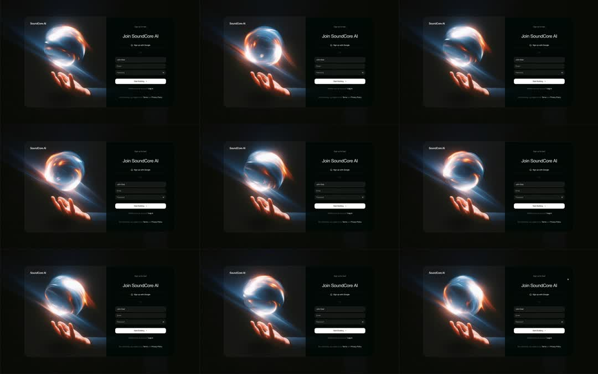

Sign-Up page: dark split auth screen - left panel is a cinematic image of a hand reaching toward a glowing plasma orb (blue core, ember-orange wisps) whose light churns and rays shift; right panel 'Join SoundCore AI' with Google button, email/password fields, Start Building CTA; the orb artwork slowly swirls (ambient video-like loop).
Media
Frame-by-frame

0-100%
Layout fixed: orb panel left (rounded 20px, inset 16px), form right. Across frames the orb's plasma rotates - bright core stays center-upper, orange flame wisps curl around the sphere's lower limb, light rays sweep faintly across the hand; form static.
Build prompt
Rebuild this interaction 1:1: a dark split sign-up page - left panel is a cinematic image of a hand reaching toward a glowing plasma orb (blue core, ember-orange wisps) whose light churns and rays shift; right panel "Join SoundCore AI" with Google button, email/password fields, and a Start Building CTA.
## Stack
React + TypeScript + Tailwind. Orb artwork as a video loop or layered-gradient shader (plasma rotation + ray sweep). Form is standard. Animate transform and opacity only.
## Scene
Fixed split layout: orb panel left (rounded 20px, inset 16px from the screen edge); form right - "Join SoundCore AI" heading, Google SSO button, email + password fields, Start Building primary CTA, dark theme throughout.
## Motion spec
Pattern: ambient artwork loop, form static.
- Orb: plasma rotates slowly (~8s loop, linear); bright core stays center-upper; orange flame wisps curl around the sphere's lower limb; faint light rays sweep across the hand.
- Form: perfectly still - inputs, buttons, and copy never animate (beyond standard 150ms focus rings).
## Calibration
- Orb loop ~8s and seamless - you should not be able to find the loop point.
- The hand stays sharp; only the orb's light moves (rays + wisps). If the hand swims, the composite is wrong.
- Form contrast: white CTA, zinc-500 helper text, inputs at white/5 with white/10 borders.
## Reduced motion
Orb artwork holds a static frame.
## Don't miss
- The orb panel is inset (16px) with 20px radius - it reads as an artwork mounted in the page, not a full-bleed background.
- Blue core with ember-orange wisps is the specific palette; generic purple plasma changes the brand.
- The form is the quiet half of the composition - resist adding motion to it.